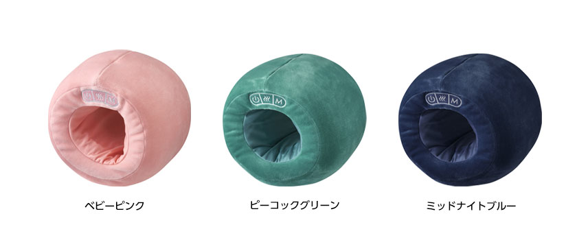
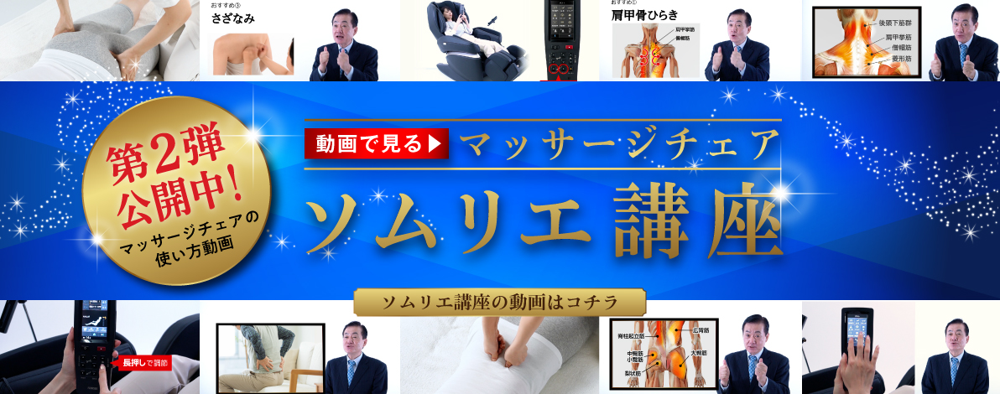

September 16, 2021
Fuji Medical Instrument Co., Ltd. (Headquarters: Osaka City, Osaka Prefecture), a comprehensive manufacturer of beauty and health, is a video distribution service "Massage Chair Sommelier" * 1 that explains the effective operation method of the specialist "Massage Chair Sommelier" that conveys the charm of massage chairs. As the second part of "How to use the massage chair sommelier video course", we started distributing 6 operation methods according to the stiffness and tiredness of each part from Thursday, September 16th.

In May 2021, we started the distribution service of "How to use the massage chair sommelier video course", and introduced the specific operation procedure from how to sit on the massage chair * 2 to how to choose the automatic course through the video. increase.
In the newly delivered video, the selection method and operation method of the course for pinpointing the stiffness and tiredness of the shoulders, scapula, and waist are divided into 6 parts, mainly "part concentration technique" and "manual selection". From the fir technique, we will introduce carefully selected fir techniques that the massage chair sommelier especially recommends. In addition, we will also pick up and guide you to the massage techniques that meet your needs, such as those who like strong massage and those who like soft massage.
商品の使い方をより深く知っていただくことで、1人でも多くのお客様のお悩みを解決できるよう、動画を活用したアフターサービスの充実化を図って参ります。
フジ医療器YouTubeチャンネルURL： https://www.youtube.com/user/FujiiryokiMovie
再生リスト名： 『マッサージチェアソムリエによる使い方動画講座』
対象商品 ： サイバーリラックス マッサージチェア AS-2100
9月16日公開コンテンツ ： No.1 肩への贅沢7分間！ 部位集中「肩」編
No.2 肩甲骨への贅沢7分間！部位集中「肩甲骨」編
No.3 腰への贅沢7分間！部位集中「腰」編
No.4 肩のコリに！手動選択「肩」編
No.5 肩甲骨の疲れに！手動選択「肩甲骨」編
No.6 腰の疲れに！手動選択「腰」編
『マッサージチェアソムリエによる使い方動画講座』 No.1 肩への贅沢7分間！ 部位集中「肩」編
※1 「マッサージチェアソムリエ」とは当社独自の肩書であり、マッサージチェアの機能はもちろん、健康に関する専門知識を持ち合わせたプロといえる社員です。お客様とのコミュニケーションを通して、最適な使い方をご提案しています。
※2 動画で解説する商品は「サイバーリラックス マッサージチェア AS-2100」のみです。
▼ フジ医療器公式Youtubeチャンネルはこちら ▼
お客様相談窓口 Tel ： 0120-027-612
Marketing Department: Ichii, Murata Tel: 06-4793-0611 (Representative)